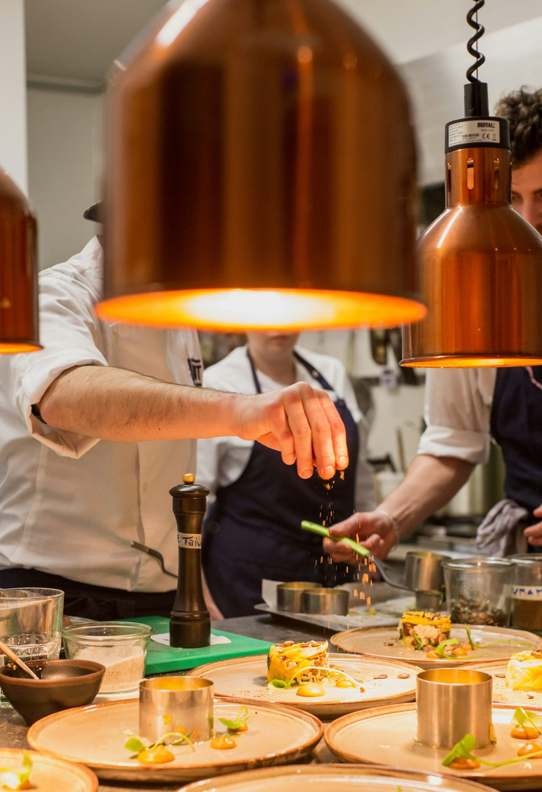
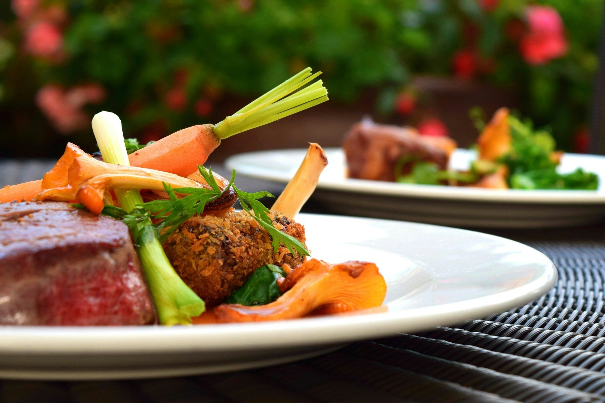
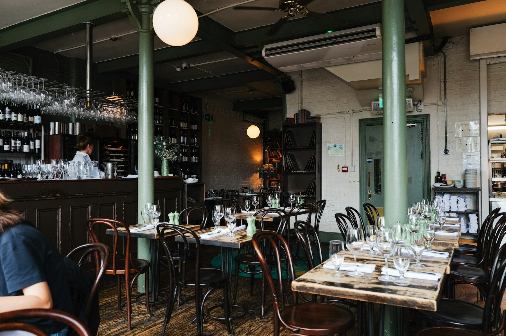

本日のメインプレート
メイン料理 / サラダ / パン


AT OUR TABLE
仕事帰りのひとりごはんも、
久しぶりの友人との待ち合わせも。
まずは、小さなひと皿と好きな飲み物を。
お腹が空いたら、香ばしく焼いたメインを。
食事にも、一杯だけの日にも。
ちゃんとおいしくて、かしこまらない。
EMBERがつくりたいのは、そんな食卓です。
TABLE TALK

グラスが触れる音。
キッチンから届く香り。
それも、今夜のごちそう。
野菜は食感を残して。
肉は焼き色と、しっとりした中身を。
ソースは、最後のひと口まで。
難しい説明より、
また食べたくなる料理でありたい。
香ばしい肉料理
×
季節の野菜
×
軽やかな赤ワイン
料理・店内・調理風景の写真は、お店の世界観を伝える参考素材です。実在のEMBERの営業・提供内容ではありません。
前菜をつまんで、メインを分けて。
ふたりの食卓を、少しだけ組み立ててみる。
MAKE YOURSELF AT HOME
料理の香りも楽しめるカウンター。少しだけ飲みたい日にも。
ひと皿を分け合えるテーブル。おふたりでも、小さな集まりでも。
11:30–14:30
17:30–22:00
火曜日
架空のお店のため、所在地・電話番号は掲載していません。
SAVE YOU A SEAT
日程と人数を選んで、来店のイメージを。